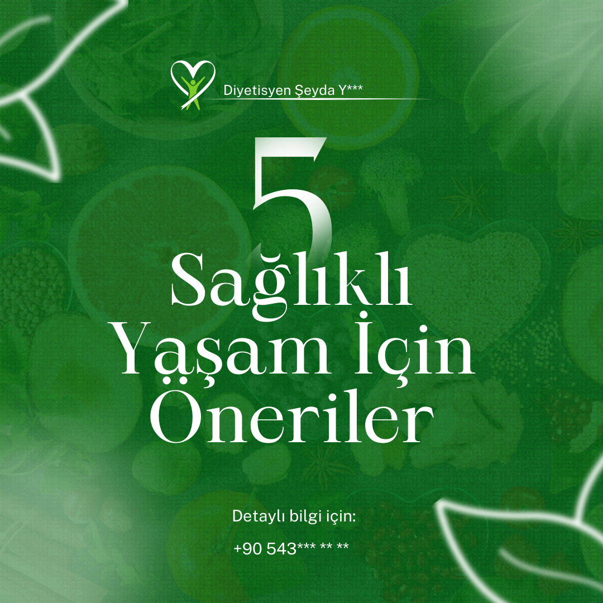
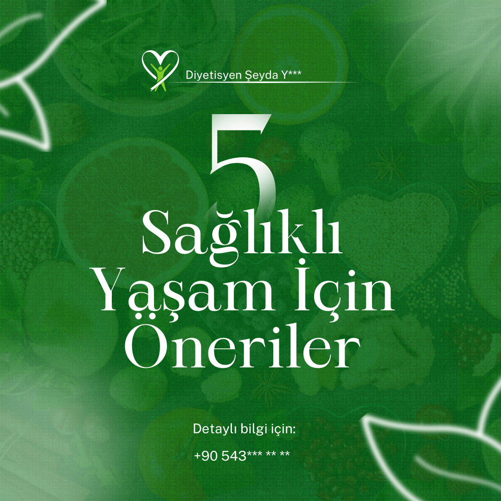
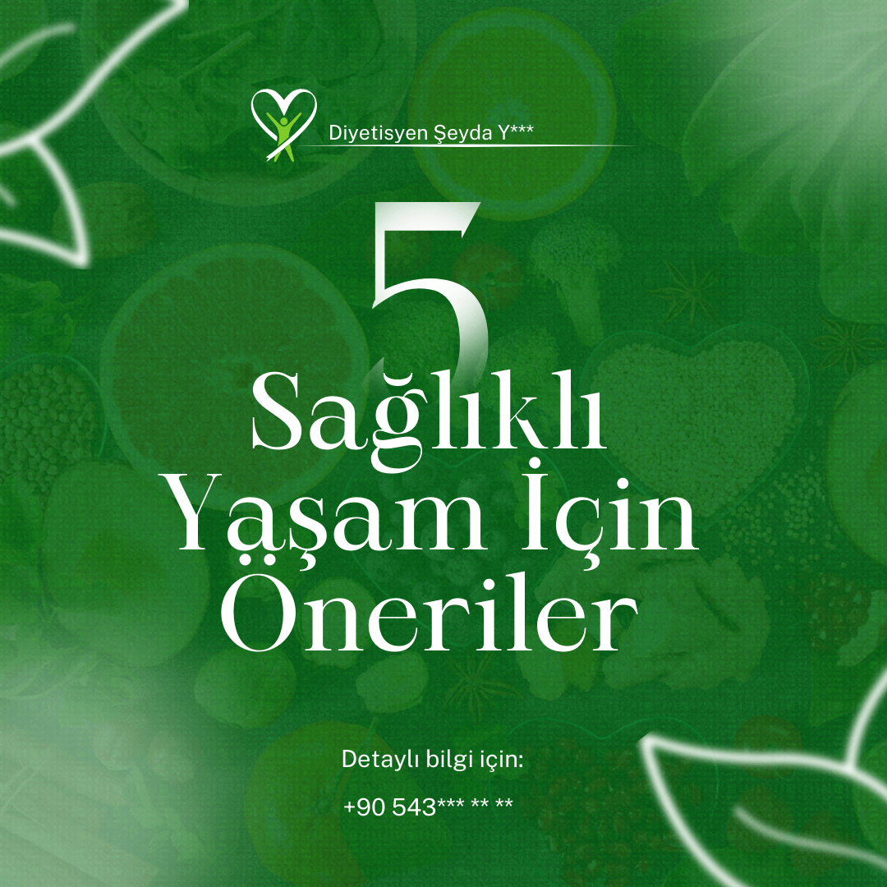

Portfolyo
Retro Afiş Tasarımı
Bu çalışma, tipografik afiş ve retro renk paletiyle hazırlanmış, 3D efektli bir tasarım örneğidir.


Peyzaj Görselleştirme
Peyzaj mimarlığı projeleri için 3D görselleştirme, modelleme ve render çalışması.


Sosyal Medya Post Serisi
Instagram ve diğer platformlar için tipografik ve retro stilde hazırlanmış görsel post serisi.

 



E-Ticaret Sayfa Tasarımı
Online mağazalar için UX odaklı sayfa tasarımı, görsel düzen ve 3D öğeler.